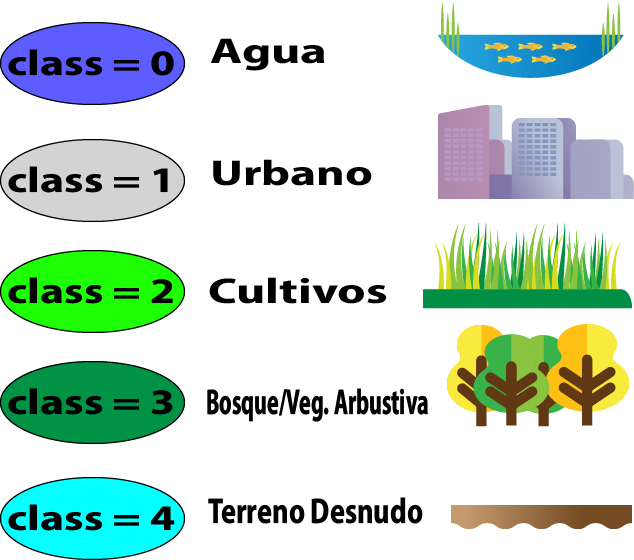
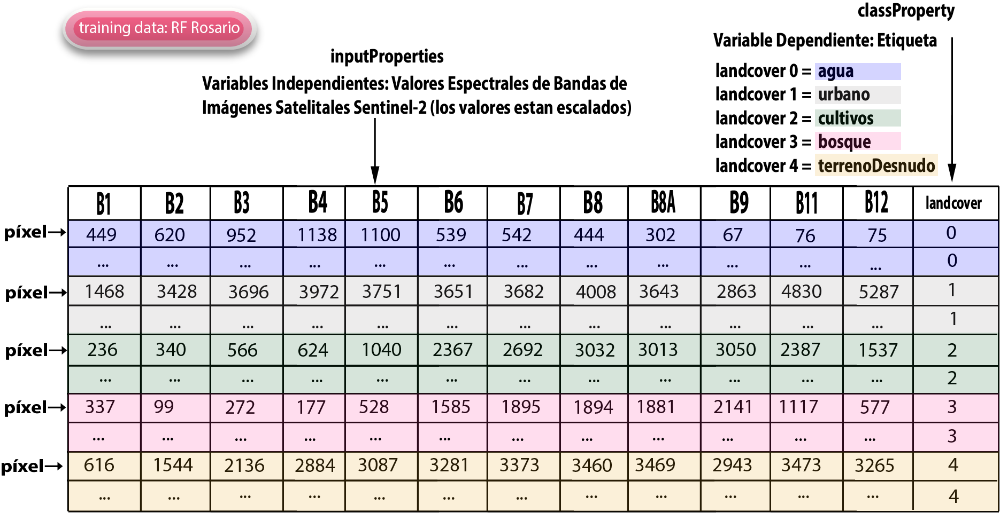
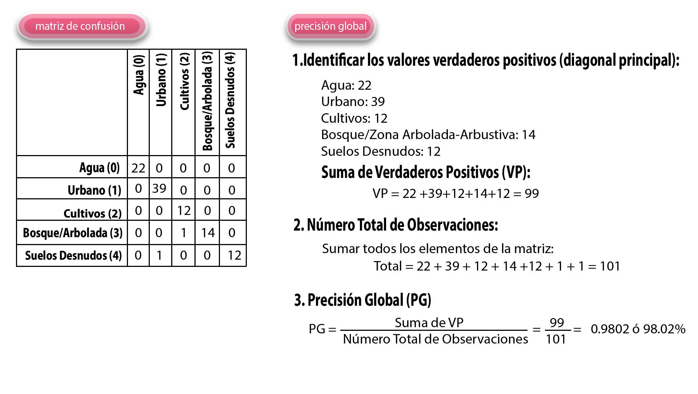
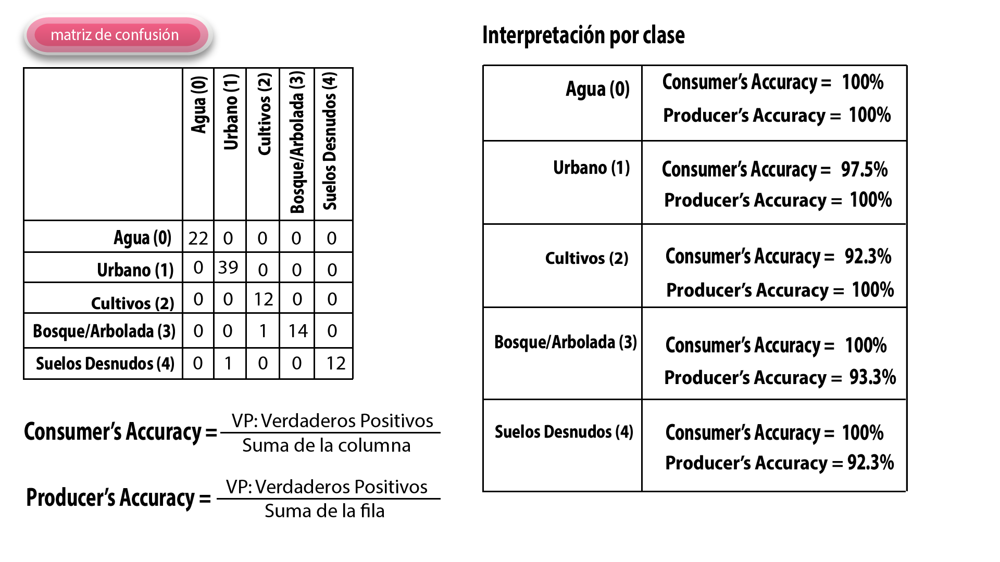

2. Capítulo 2 · Random Forest en GEE#
2.1. Introducción#
La clasificación de imágenes satelitales es una técnica fundamental en teledetección, y uno de los enfoques más comunes es dividir el territorio en categorías específicas como: urbano, suelo desnudo, agua ó vegetación de cultivos, Bosque-o-Zona Arbolada-Arbustiva).

Primero, accedemos al code editor de nuestra cuenta de Google Earth engen y cargamos la colección de imágenes Sentinel-2 SR Harmonized, que incluye datos de alta calidad para análisis medioambientales.
Luego defimos una región de interés (ROI), la cual comprende una gran parte del área metropolitana de Rosario en la provincia de Santa Fé. A medida que avanzamos, aprenderemos a implementar este proceso en código, con la meta final de que cada participante pueda replicar el ejemplo en su ciudad.
Aplicamos filtros para limitar las imágenes a las que tienen menos del 30% de nubes, que fueron capturadas entre el 1 de enero de 2024 y el 31 de Diciembre de 2024, y que se encuentran dentro de nuestra región de interés, o ROI.”
Creamos una composición utilizando la mediana de las imágenes seleccionadas, lo que nos permite reducir la interferencia de nubes y otros artefactos.
Para visualizar nuestra composición, configuramos parámetros RGB usando las bandas B4, B3 y B2, que representan rojo, verde y azul respectivamente.
Ahora contamos con una imagen compuesta y procesada lista para análisis geoespacial, en particular explicaremos en esta sección como aplicar aprendizaje automático con Random Forest a la región de estudio para obtener una clasificación de suelos de acuerdo a las categorías de agua, edicaciones del sector urbano, suelo desnudo, y vegetación en la que distinguiremos cultivos de forestación.
Este proceso comienza identificando los píxeles correspondientes a cada una de estas clases dentro de una imagen satelital. Para ello, es esencial recolectar datos de entrenamiento representativos que permitan entrenar un modelo de clasificación eficaz. El primer paso: la recolección de datos de entrenamiento es crucial. Para ello, necesitamos etiquetar manualmente ejemplos de cada una de las cinco clases en nuestra imagen. Por motivos de eficiencia, las etiquetas no se asignan como texto, sino como valores numéricos: los píxeles de agua se etiquetan como 0, los pixeles de edificaciones urbanas como 1, los de suelo desnudo como 3, los de cultivos como 4 y los de vegetación bosques o arbustiva como 4. Esta codificación facilita el procesamiento por parte del modelo y asegura un manejo eficiente de las clases.
El primer paso es crear una nueva capa. Haz clic en “Nueva capa”. Por defecto, el tipo es geometría, pero iremos a la configuración y cambiaremos esto a un Feature collection. Nombraremos esta capa como “agua”, y agregaremos una propiedad llamada landcover. Para esta clase, definiremos que land cover = 0 corresponde agua.
Al recolectar datos de entrenamiento, es fundamental ser preciso. Por ejemplo, para identificar áreas urbanas, definimos esta categoría como cualquier superficie mencionada recién, superf. construida, edificios, carreteras y otras superficies impermeables. Utilizando las herramientas de dibujo disponibles, como marcadores o puntos, seleccionamos manualmente píxeles que representen agua. Es esencial hacer esto con cuidado, asegurándonos de que los puntos se coloquen exactamente sobre píxeles de agua,
Una vez que recolectamos ejemplos representativos de píxeles de agua, repetimos el proceso para las demás clases:
Ahora es el turno de la categoría urbano que representa a edificios, superficie construida, como edificios, carreteras y otras superficies impermeables. Creamos una nueva capa, de tipo feature collection, cuyo nombre es urbano, con una propiedad lancover igual a 1. Ahora, con esta nueva colección configurada, comenzaremos a marcar puntos DE ESAS caracteristicas.Nuevamente es esencial hacer esto con cuidado, asegurándonos de que los puntos se coloquen exactamente sobre pixeles urbanos, evitando errores como etiquetar un árbol o vegetación cercana.
Es útil contar con mapas base de alta resolución como referencia. Sin embargo, estos deben utilizarse con precaución, ya que las imágenes de los mapas base pueden corresponder a fechas diferentes a las de nuestra imagen satelital. Por ejemplo, un edificio visible en el mapa base puede no existir en la imagen satelital actual. Por lo tanto, siempre debemos priorizar la referencia directa de nuestra imagen satelital.
Aseguráte de recopilar datos de diferentes partes de la ciudad que correspondan a la misma clase para garantizar que el modelo capture la variabilidad dentro de esa categoría. Mientras marcas puntos para una clase, si identificas un ejemplo claro de otra clase, puedes cambiar de capa y marcar ese punto también.
Bien, ahora que hemos recopilado todos los datos para los puntos de la clase urbana, pasaremos a la siguiente clase: terrenos desnudos. El primer paso es crear una nueva capa. Haz clic en “Nueva capa”. Por defecto, el tipo será geometría, pero iremos a la configuración y cambiaremos esto a una colección de características (feature collection). Nombraremos esta capa como “superficieDesnuda”, y agregaremos una propiedad llamada land covER. Para esta clase, definiremos que land cover = 1 corresponde a terrenos desnudos. También puedes cambiar los colores de la capa si lo deseas para facilitar su visualización. Ahora, con esta nueva colección configurada, comenzaremos a marcar puntos en las superficiesDesnudas.
Definimos terreno desnudo como cualquier píxel que representa suelo expuesto, sin construcciones ni vegetación, únicamente tierra desnuda. Utilizando la herramienta de marcador, selecciona la capa de terrenos desnudos y comienza a colocar puntos en las áreas correspondientes.
hacemos los mismo con cultivos, Creamos una nueva capa, de tipo feature collection, cuyo nombre es cultivos, con una propiedad lancover igual a 3. Incorporamos pixeles a la capa. hacemos los mismo con forestación o arbusto, Creamos una nueva capa, de tipo feature collection, cuyo nombre es bosque pero comprende también “zona arbolada y arbustiva” o vegetación leñosa, con una propiedad lancover igual a 4. Incorporamos pixeles a la capa.
La calidad y la representatividad de estos datos de entrenamiento son cruciales, ya que los algoritmos de aprendizaje automático tratan los datos de entrada como verdades absolutas. Cualquier error en esta etapa puede traducirse en un modelo impreciso y resultados incorrectos.
Aunque existe la posibilidad de utilizar polígonos para generar automáticamente múltiples ejemplos de entrenamiento, esta práctica debe evitarse. Cuando un polígono incluye píxeles de diferentes clases, el modelo puede recibir información incorrecta y generalizar de manera inexacta. Por ello, la recolección manual y cuidadosa de puntos individuales es siempre preferible, aunque sea más laboriosa.
El aprendizaje automático, aunque automatiza muchos procesos, requiere una inversión significativa en tiempo y esfuerzo para recolectar y limpiar los datos de entrada. Este trabajo manual es la base de un modelo exitoso. Una vez que los datos están listos, el resto del proceso, como la implementación del modelo y la clasificación, es relativamente sencillo y eficiente.
Una vez que hayamos terminado, tendremos algo como esto: una colección de muestras de entrenamiento para cada clase. Estas muestras estarán bien distribuidas por la región de interés, con alrededor de 10 puntos por clase para áreas pequeñas. Para regiones más grandes, se recomienda aumentar la cantidad de puntos a 100.
2.2. Unificando Muestras de Entrenamiento#
Ahora que hemos etiquetado cada clase con valores únicos (0 para agua, 1 para urbano, 2 para terreno desnudo, 3 para cultivos y 4 para vegetación de bosque o zona arbolada ó arbustiva), necesitamos combinar todas estas muestras en una sola colección de entrenamiento. Esto simplificará el proceso de clasificación.
Definiremos una variable llamada GCPs (Ground Control Points, puntos de control en tierra), que contendrá nuestras muestras de entrenamiento. Usaremos la función MERGE para combinar las capas: primero la urbana, luego la de agua, después la de cultivos, después la de terrenoDesnudo y finalmente la de bosque-zona arbolada y arbustiva. Ahora, GCP será una única colección que incluye todas las muestras de entrenamiento.
Esta colección tiene una única propiedad llamada land cover, que es la etiqueta de clase. Sin embargo, aún necesitamos asociar las REFLECTANCIAS ESPECTRALES de cada píxel en nuestra imagen compuesta a estas etiquetas.
2.3. Extracción de Valores de Píxeles#
El siguiente paso es extraer los valores espectrales de los píxeles en nuestra imagen compuesta. Esto se hace con la función sampleRegions, que toma la imagen y las geometrías de nuestras muestras de entrenamiento. Configuraremos la función para mantener solo la propiedad land cover y definiremos una escala de muestreo acorde a la resolución de Sentinel-2 (EN ESTE CASO 10 metros).
Después de ejecutar esta función, cada muestra de entrenamiento incluirá los valores espectrales de las 12 bandas de la imagen, junto con su etiqueta de clase. Esto nos proporciona una tabla donde cada fila corresponde a un píxel de entrenamiento y cada columna representa las bandas espectrales. Esta tabla será usada para entrenar el modelo de clasificación.
2.4. Entrenamiento del Clasificador#
Para entrenar el modelo, utilizaremos un clasificador de bosque aleatorio (Random Forest). En Earth Engine, esto se hace con la función ee.Classifier.smileRandomForest. Inicializaremos el clasificador con un número arbitrario de árboles, por ejemplo, 50. Más adelante, podremos optimizar este valor utilizando técnicas de ajuste de hiperparámetros.
El clasificador se entrena llamando a la función train, donde especificamos:
Las propiedades de entrada (los nombres de las bandas espectrales).
La propiedad objetivo (land cover). Una vez entrenado, el clasificador estará listo para predecir las etiquetas de clase en los píxeles no etiquetados de nuestra imagen.
2.5. Clasificación de la Imagen#
Tomamos nuestra imagen compuesta y aplicamos el clasificador con la función classify. Esto genera una nueva imagen clasificada, donde cada píxel tiene un valor correspondiente a una de las clases (0, 1, 2 o 3).
Para visualizar la imagen clasificada, definimos parámetros de visualización que incluyan:
Rango de valores (min = 0, max = 3), los cuales representan los cuatro valores de nuestras clases.
Una paleta de colores que facilite identificar las diferentes clases.
Al final, tendremos una representación visual clara de la clasificación, con cada clase distinguible por su color. Esto completa el proceso básico de clasificación supervisada utilizando Google Earth Engine.

Cualquiera sea el color que especifiques aquí, corresponderá a la clase cero, clase uno, clase dos y clase tres y clase 4. Ahora, vamos a añadirlo al mapa, específicamente a la imagen clasificada, utilizando este parámetro.
Cuando ejecuto este proceso, GEE procederá a entrenar el modelo con la imagen clasificada. Esto implica que GEE entrenará el modelo utilizando los datos proporcionados, realizará las predicciones para cada clase y generará los resultados correspondientes. A continuación, quiero recortar los datos a la geometría con la que hemos entrenado el modelo, y así podrás observar los resultados obtenidos.
Al ejecutar la función, EE realizará la predicción para cada píxel, asignando a cada uno su clase correspondiente. Como resultado, verás la imagen clasificada final. A medida que realizas zoom en la imagen, EE continuará con la clasificación en tiempo real, previendo el valor de cada clase en cada píxel. Incluso con las pocas muestras de entrenamiento recolectadas en apenas unos minutos, el modelo tiene un rendimiento bastante bueno, logrando clasificar la imagen de manera precisa.
La clasificación se realiza de forma eficiente, con una detección precisa de píxeles correspondientes a áreas urbanas, cuerpos de agua y vegetación, lo que demuestra el poder del aprendizaje automático y la computación en la nube. Lo interesante de este enfoque es que, utilizando una cantidad mínima de muestras de entrenamiento, es posible crear un modelo que clasifica cada píxel en la imagen en tiempo real, gracias a las capacidades de procesamiento paralelo en la nube. No es necesario descargar datos ni esperar largos tiempos de cómputo.
El algoritmo que utilizamos es el clasificador Random forest o en español “bosques aleatorios”, basado en una biblioteca de código abierto llamada SMILE, que implementa diversos algoritmos de aprendizaje automático. Dado que el backend de Earth Engine está desarrollado en Java, al ejecutar esta función, se utiliza dicha biblioteca para construir el modelo de bosques aleatorios y emplearlo en las predicciones. Este flujo de trabajo se basa completamente en modelos y herramientas de código abierto, lo que proporciona una gran flexibilidad.
Lo que Earth Engine aporta es la capacidad de realizar estos procesos en tiempo real y a gran escala. Esto significa que, mientras que en un entorno local podría tomar meses realizar una clasificación a nivel nacional, en Earth Engine se puede hacer en tiempo real.
2.6. Recomendaciones para la recolección de Datos#
Algunas recomendaciones para optimizar la recolección de datos son las siguientes:
Usar imágenes Sentinel-2 como referencia. Asegúrate de utilizar imágenes de Sentinel-2 para seleccionar las muestras de entrenamiento, ya que las imágenes de alta resolución pueden no coincidir temporalmente con las imágenes de Sentinel-2, lo que podría afectar la precisión del modelo.
Distribuir las muestras de entrenamiento de manera equitativa. Asegúrate de tomar puntos de entrenamiento distribuidos por toda la ciudad y, especialmente, en las calles. Un error común es confundir cuerpos de agua con áreas urbanas oscuras.
Evitar muestras mixtas. No utilices píxeles mixtos para el entrenamiento. Intenta seleccionar ejemplos puros de agua, vegetación, áreas urbanas y terrenos áridos. Dejá que el modelo se encargue de los píxeles mixtos.
Una vez que completes la clasificación, es fundamental evaluar cuán precisa es la clasificación realizada. ¿Está el modelo generando resultados satisfactorios? ¿Es el modelo perfecto? ¿Está alcanzando una precisión del 100% o solo un 90%? Si deseas mejorar la clasificación, ¿cuánto influiría recolectar 100 muestras de entrenamiento adicionales? ¿Mejoraría la precisión o no tendría un impacto significativo? ¿Cuánto aumenta la precisión aplicando 100 arboles aleatorios en lugar de 50?
La evaluación de la precisión es un paso crucial en el análisis de cualquier modelo. Una técnica común es la validación cruzada, que consiste en dividir los datos de entrenamiento en dos subconjuntos: uno para entrenar el modelo y otro para validar las predicciones. Por ejemplo, se podría usar el 60% de los datos para entrenar y el 40% restante para validar.
Para ello, vamos a dividir con puntos de control para entrenar y validar un modelo de clasificación de imágenes satelitales.”
El comando .merge() nos permitió fusionar las colecciones en una sola llamada gcps. Así consolidamos todas nuestras muestras. Para asegurarnos de que todo esté correcto, usamos el comando print() para verificar el tamaño de la colección resultante.”
Ahora necesitamos dividir nuestras muestras en dos grupos: uno para entrenamiento y otro para validación. Lo hacemos asignando un número aleatorio entre 0 y 1 a cada punto en la colección.”
El método randomColumn() crea una nueva columna llamada random, que contiene números aleatorios. Así podemos dividir las muestras de forma equitativa.”
“Con este número aleatorio, aplicamos un filtro para separar los datos. Aquí asignamos el 60% de las muestras al conjunto de entrenamiento.”
“Y el restante 40% al conjunto de validación.”
Por último, usamos nuevamente el comando print() para verificar el tamaño de cada conjunto y asegurarnos de que la división sea correcta.”
2.7. Precisión del Modelo#
El objetivo de esta separación de los puntos de control, es medir el rendimiento del modelo en el subconjunto de validación, que contiene muestras que no se han usado en el entrenamiento. Se compara la predicción del modelo con el valor real de cada muestra de validación. Si el modelo clasifica correctamente un píxel, se considera que el modelo ha hecho una predicción acertada.
A partir de esto, podemos generar una matriz de confusión, que muestra las predicciones del modelo frente a las clases reales. Esta matriz nos permite visualizar cuántos píxeles fueron correctamente clasificados (diagonal principal) y cuántos fueron confundidos entre diferentes clases (fuera de la diagonal). A partir de esta matriz, se pueden calcular varias métricas de precisión, tales como la precisión global, que es el porcentaje de píxeles correctamente clasificados, así como la precisión del consumidor y la precisión del productor, que se refieren a la capacidad del modelo para identificar correctamente cada clase.

Earth Engine permite calcular todas estas métricas y compararlas fácilmente para evaluar el rendimiento del modelo. Si la matriz de confusión muestra valores elevados fuera de la diagonal, eso indica que el modelo está teniendo dificultades con ciertas clases. En ese caso, se puede recolectar más datos para las clases problemáticas o ajustar los parámetros del modelo para mejorar la clasificación.
Al revisar la matriz de confusión, si se observa que hay una baja confusión entre clases.
La precisión global es alta, sin embargo podemos comenzar a optimizar el modelo, incrementando el parámetro de cantidad de arboles que se utilizan. Al cambiarlo de 50 a 100, aumenta la precisión a 98.02%
2.8. Interpretación de la Precisión Global#
una precisión Global de 98.02% indica que el modelo clasifica correctamente la gran mayoría de las observaciones. Este es un excelente desempeño, lo que sugiere que el modelo distingue bien entre las clases.

Confusiones a considerar:
Bosque/Zona Arbolada-Arbustiva y Cultivos: Hay un píxel de cultivos clasificado erróneamente como Bosque. Suelos Desnudos y Urbano: Hay un píxel de Suelos Desnudos clasificado erróneamente como Urbano. Estas áreas de confusión podrían abordarse mediante ajustes en los datos de entrenamiento o en las características utilizadas para clasificar.
Interpretación por Clase Agua (Clase 0):
Precisión del consumidor: 100% Esto significa que todos los píxeles clasificados como agua son efectivamente agua. Precisión del productor: 100% Todos los píxeles reales de agua han sido clasificados correctamente. Urbano (Clase 1):
Precisión del consumidor: 100% Todos los píxeles clasificados como urbanos son realmente urbanos. Precisión del productor: 97.5% Hay una pequeña confusión en la que un píxel urbano fue clasificado como otra clase. Cultivos (Clase 2):
Precisión del consumidor: 100% Ningún píxel clasificado como cultivos fue mal clasificado. Precisión del productor: 92.3% Un píxel de cultivos fue clasificado como bosque/zona arbustiva, indicando cierta confusión entre estas clases. Bosque/Zona Arbolada-Arbustiva (Clase 3):
Precisión del consumidor: 93.3% La mayoría de los píxeles clasificados como bosque/zona arbustiva son correctos, aunque un píxel fue clasificado erróneamente como cultivos. Precisión del productor: 100% Todos los píxeles reales de bosque/zona arbustiva fueron clasificados correctamente. Conclusión General Precisión global (Test Accuracy):
La precisión general es 98.02%, lo cual es excelente y muestra que el modelo clasifica muy bien en la mayoría de los casos. Áreas de mejora:
La confusión más notable ocurre entre cultivos y bosque/zona arbustiva, lo cual podría mejorarse mediante ajustes en las características del modelo o una recolección más detallada de puntos de control en estas áreas. Recomendación sobre nomenclatura:
Mantener el nombre de “Bosque/Zona Arbolada-Arbustiva” es apropiado, ya que refleja con más precisión la diversidad de esta clase, incluyendo árboles dispersos y vegetación silvestre.
2.9. Otras métricas de validación:#
Otras métricas incluyen el coeficiente Kappa, que mide la concordancia entre las predicciones del modelo y la clasificación aleatoria, y el F-score, que es una medida combinada de la precisión y el recall. En general, la precisión global es la métrica más utilizada en el análisis de precisión, aunque el F-score también es común en el campo del aprendizaje automático.
Una vez que estemos satisfechos con los resultados de la clasificación y la precisión, podemos continuar optimizando el modelo, ajustando otros parámetros y evaluando nuevas muestras de entrenamiento para clases especificas y mejorar la precisión general.
En próximos videos exploraremos otras técnicas de aprendizaje automático supervisado como arboles de decisión y maquinas de soporte vectorial, como así también técnicas de aprendizaje automático no supervisado, por ejemplo K-means.
2.10. Cierre#
El aprendizaje automático no solo transforma datos en conocimiento; también redefine nuestra capacidad para comprender y gestionar entornos complejos. Herramientas como SVM, árboles de decisión y Random Forest nos brindan la precisión necesaria para abordar desafíos reales, como el análisis del uso del suelo y la planificación territorial.
En este ejemplo aplicado al Área Metropolitana de Rosario, Random Forest demostró ser una herramienta poderosa, capaz de clasificar grandes extensiones de territorio con una precisión sobresaliente. Esto no solo mejora nuestra visión científica del entorno, sino que también apoya la toma de decisiones fundamentadas en evidencia.
El futuro del análisis geoespacial está aquí. Combinando algoritmos robustos y datos satelitales, podemos planificar un desarrollo sostenible que beneficie a las generaciones actuales y futuras. Gracias por acompañarnos en este recorrido por el aprendizaje automático aplicado al análisis territorial. Sigamos impulsando el conocimiento y la acción en favor de nuestro entorno.
2.11. Video del capítulo#
Podes mirar el video asociado a este capítulo en el canal de youtube de IDERA: https://www.youtube.com/watch?v=fk6atugR6ss